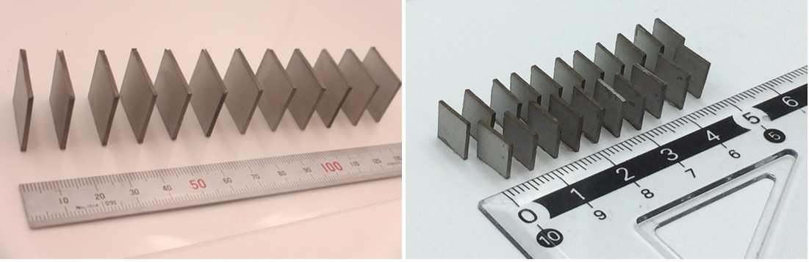
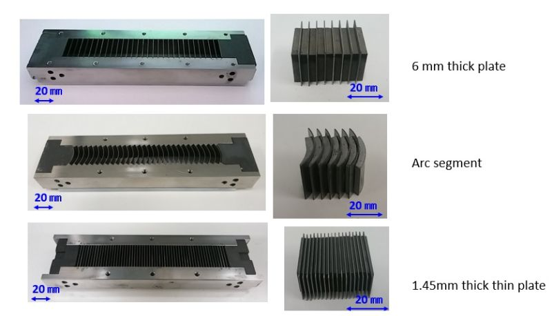

NPLP Process


Nihon Denji Sokki is working with Dr. Masato Sagawa to commercialize his neodymium magnet molding system. This new pressless process (NPLP) is a near net shape (NNS) production technology that offers advantages over other sintered material processes when fabricating magnets with complex shapes for use in motors or other related equipment.
NPLP Magnets On Going Research
Reducing average particle diameters for the powders that may be pressed in the mold helps to mitigate issues with the scarcity and high price of rare earths by eliminating the need for dysprosium (Dy). While advances in traditional molding processes such as Axial Die Pressing (ADP) or Transverse Die Pressing (TDP) have reduced average particle diameters down to 3.8 μm, these technologies seem to have reached their limit. NPLP is capable of pressing powders with diameters near 1 μm. This process also opens up opportunities for improving the coercivities of the resultant block magnets. While TDP methods offer coercivities between 1240 ~ 1600 kA/m, our ongoing research into NPLP hopes to achieve coercivities approaching 2400 kA/m.
To sinter magnetic powders into the shapes that are as near as possible to the optimal block magnet designs for obtaining the best motor efficiencies, the uniformity of the powder packing, while the mold is being filled, is critical. Here is where NPLP enjoys an advantage over other methods thanks to its use of long narrow molds. This new method can achieve a fill factor of 3.5 g/cc which yields some of the most highly packed magnets – yielding densities of 7.52 g/cc.
In order to achieve good results using ultrafine powder -- diameters of 1.1 μm, the mold is set into a closed environment with an oxygen content lower than 0.0001%. Molds are filled to densities between 3.2-3.6 g/cm using an air tapping process (AT process). The powders within the molds are then sintered while a pulsed external field of 5 Tesla is applied.

Note: When producing magnets, the data shows coercivity and grain sizes are inversely correlated. TDP methods use powders with average grain diameter distributions centering on 5 μm, which yields blocks with typical coercivities of about 1040 kA/m. Moreover, older pressless process methods, which are capable of processing powders with average grain diameters of 1.2 μm, can achieve coercivities of 1600 kA /m.
Typical Results for NPLP
Magnet Block Measurements:
- Desitiy=7.52 g/cm
- Br=1.4 T
- Hcj=19.98 KOe
- Bhmax=48 MGOe
The improved coercivity for neodymium magnets offered by NPLP is due in no small part to the ability of existing pressless processes to handle powders with finer particle size distributions than those used in standard TDP methods. However, magnets resulting from these older processes often show less than ideal internal dipole alignment due to the tendency for the off-axis fields to grow within their molds while the powder is being sintered. By using long narrow molds with divides placed a fixed intervals along their length, the NPLP method allows us to successfully regulate the magnetic flux as it flows through each sectioned-off region of the mold. Since NPLP only requires a single mold, we can achieve a significant cost reduction.
Examples of NPLP molds are shown below.
